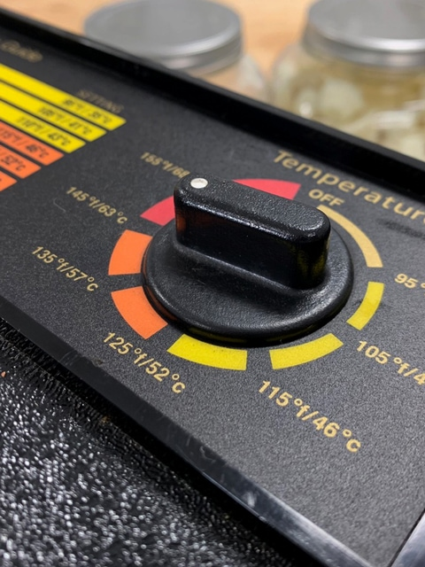

Dehydrating at 145 degrees – Explained

As many of you know, I LOVE the Excalibur dehydrator. They do not endorse me, I am just passionate about quality kitchen tools, and in my book, this makes the top of the list.
In several of my recipes, you will notice instructions to set your dehydrator at 145 degrees (F) for 1 hour and then decrease it to 105 – 115 degrees after that. Some of you may be concerned, thinking that we are killing the enzymes at 145 degrees (F).
However, this is not the case based on information from the Excalibur website. I copied and pasted their explanation below; I didn’t want you to take my word for it. The main reason for this technique is to decrease the dry time to save energy and also cut down on the possibility of introducing bacteria to some of the recipes.
I don’t recommend it on less dense recipes such as kale chips because they have low fluid content. I tend to use this technique on thicker recipes such as raw breads, cookies, cakes, and bars.
Food Temperature vs. Air Temperature
In understanding the difference between air temp and food temp, it is important to know how to read Excalibur’s dial. The temperature reading on the dial refers to FOOD temperature.
In general food, the temperature is about 20 degrees cooler than the air temperature. Therefore if you set your Excalibur at 105ºF, you are setting it to hold the food temperature at around 105ºF, the air temperature may get as high as 125ºF depending upon the moisture content of the food. The reason the food temperature is cooler is because of evaporation. As the moisture on the surface of the food evaporates, it cools the food keeping it about 20ºF cooler than the air temperature. We have discovered this through hours of testing by measuring the air temperature and food temperature simultaneously during the dehydration process using a Doric Trendicator with type J thermocouples.
How Excalibur’s Thermostat Works
It is also essential to know how the thermostat works. We have found through experimentation that to preserve the enzymes and reduce the risk of mold and bacteria, it is necessary to have a wide fluctuation in temperature.
Because enzymes and microorganisms both thrive at the same temperature, we must be able to accomplish two things at once. We must keep the food temperature low enough not to harm the enzymes, and elevate the air temperature high enough to remove the moisture quickly to stop the growth of mold or bacteria. The wide fluctuation in temperature accomplishes just that.
As the air temperature rapidly rises to its high point, moisture .is quickly evaporated off the surface of the food. As the temperature lowers, the dryer surface pulls moisture from the center of the food and becomes saturated again. Because of the continuous up and down fluctuation in air temperature and constant evaporation, the food temperature remains constant at a lower temperature.
After all the moisture is evaporated out of the food, the food temperature will rise and then equalize somewhere in the middle of the air temperature fluctuation. Once the food temperature rises, one might get worried and think that the enzymes are dead if they don’t understand the third critical aspect. Which is that enzymes are only susceptible to damage by high heat when they are in the wet state, therefore once the food is dehydrated, the enzymes have become dormant and can withstand much higher temperatures.
According to our discussions with Viktoras Kulvinskas on this matter, he said that we were right, and that, “dry enzymes can survive well up to 150ºF.” He has tested food he has prepared in his Excalibur dehydrators with an experiment he created and found it to be high in enzymatic activity. We have also done some experiments by soaking various seeds, dehydrating them at different temperatures, and soaking them again afterward to see if they will sprout. They did, which proves that the enzymes are alive.
Enzyme Destruction Temperatures
Something that has caused us a lot of concern is the fact that we have heard so many conflicting opinions as to the temperature at which enzymes are destroyed. Twenty years ago, Ann Wigmore spoke to our Founder Roger Orton personally and said that the food temperature had to go above 120ºF for a period of time before the enzymes were destroyed. Again in our discussions with Viktoras, he said the same thing.
Ann tested different dehydrators and found that Excalibur was the best for living foods. She found the best technique for saving enzymes was to set Excalibur on a higher food temperature setting in the beginning and then turn it down after a few hours.
However, because most people may not know when to turn it down, and by leaving it on the higher setting may kill the enzymes she said to set your Excalibur on 105ºF setting throughout the entire cycle. That way, the food temp will never go above 120ºF even after it is dry.
We believe this is why many have come to think that 105ºF air temperature is the temperature at which the enzymes are destroyed, which is entirely inaccurate. We have also heard many people quote Dr. Edward Howell in his book Enzyme Nutrition that prolonged temperatures over 118ºF will destroy enzymes. We also read in his book, where he says that the enzyme amylase can still convert starch to sugar at air temperatures up to 160ºF but will wear out after half an hour. We have also read where he says that the optimum temperatures for enzymes are 45ºF to 140ºF.
Just recently, we spoke with Dr. John Whitaker, who is a world-renowned enzymologist and former dean of the Department of Nutrition and Food Science at U.C. Davis. He said that every enzyme is different, and some are more stable at higher temperatures than others but that most enzymes will not become completely inactive until food temperatures exceed 140ºF to 158ºF in a wet state.
We appreciate you taking the time to read this information and urge you to help us in spreading it throughout the raw food community. Please contact us if you have any questions, or you know of any further information you can share with us. We want to meet the needs of the raw food community and are still researching to make any necessary changes, but from what we have been told, the present Excalibur is perfect. We hope that it has helped in answering your questions regarding your Excalibur Dehydrator. Please share this with any of your friends in your community.
Sincerely,
Your Friends at Excalibur